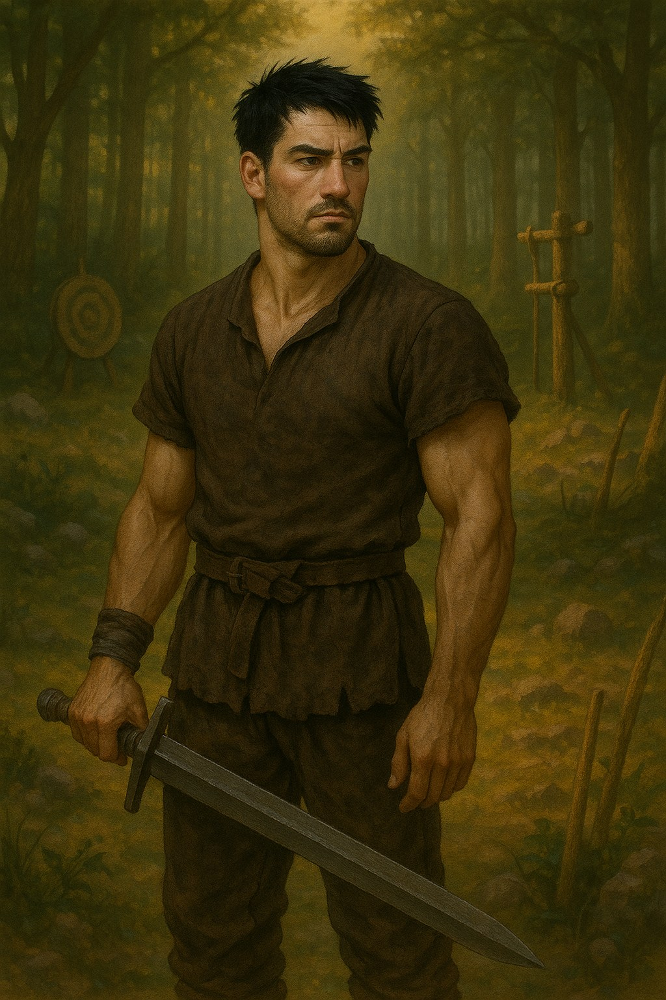
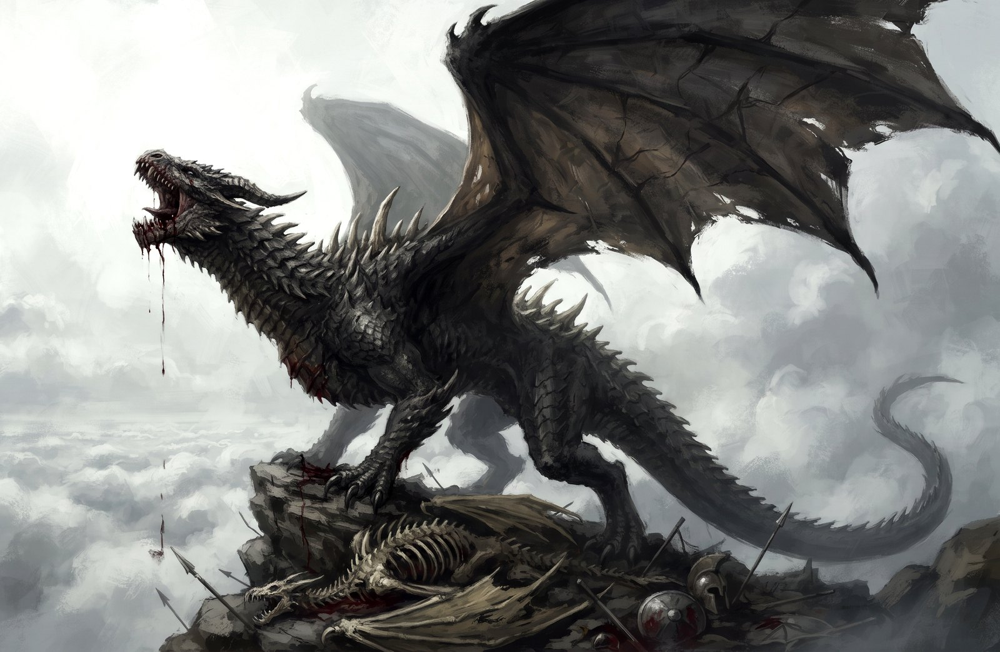

Thorfinn
O Cavaleiro Negro de Kheltan.
Detalhes do Personagem
- Nome:
- Thorfinn — guerreiro solitário e caçador de recompensas.
- Personalidade:
- Calmo, moderado, porém desconfiado. Determinado, se recusa a batalhar em guerras que não são suas.
- Idade:
- 23 | Gênero: Masculino | Filho único do soldado comandante do Reino de Kheltan
- Origem:
- Belford, centro do reino de Kheltan
- Raça:
- Humano
Descrição
Thorfinn cresceu em Belford, um dos continentes de Albinur. Dedicou um longo período da sua vida para se tornar um verdadeiro guerreiro. Agora, anos depois, se tornou um caçador de recompensas e sempre se afasta de guerras que não são suas, mas isso pode ser decidido dependendo do quanto ele pode receber, mas sempre põe a Honra de um Cavaleiro antes de qualquer recompensa.
A Lenda de Thorfinn

Thorfinn, uma criança que sempre quis lutar nas grandes guerras mas que ainda tinha grandes dificuldades de empunhar as grandes espadas nativas do Reino de Kheltan, sua cidade natal. Determinado, esse garoto cresceu treinando toda a sua força, muitas batalhas simuladas com lanças afiadas e escudos, mas mesmo assim, ele não conseguia segurar a lança tão alto por ser pesada demais para ele.
Aos 20 anos, é chegado o dia da prova de seleção para se tornar enfim um Cavaleiro, mas o mesmo foi reprovado e humilhado por não conseguir levantar sua lança contra seu oponente. Abominado por todo seu treinamento não ter tido retorno algum, Thorfinn se aborrece e à noite parte para a floresta onde se perde e encontra uma fogueira de um cavaleiro de armadura preta como carvão, porém resistente como as escamas de um dragão.
O mesmo, assustado e ao mesmo tempo curioso, se aproxima do estranho que ao chegar mais perto percebe que ele não tinha brasão em sua armadura e que estava dormindo. Thorfinn ainda aborrecido decide tentar roubar o estranho e tenta pegar sua lança e escudo, ele tropeça e acaba acordando o cavaleiro bêbado que observa com um riso. Thorfinn descobre que as armas que ele tentava roubar eram feitas com materiais antigos e que eram pesadas demais para empunhar — sentia como se as armas nem saíssem do lugar.
Oito Anos na Carcaça
Descobrindo pelo estranho que existiam armas sagradas e sem pensar duas vezes, pede para ser treinado pelo cavaleiro. O estranho aceitou treinar o jovem e o acompanhou para o local. Thorfinn pensa em desistir quando descobre que seu treinamento é dentro de um dragão morto — ao entrar na carcaça que, de acordo com o seu mestre, teria mais de cinco mil anos.
Com medo e determinado, Thorfinn entra cada vez mais ao fundo e sem perceber já estava em outro mundo. Por oito torturosos anos, Thorfinn treinou com apenas um pequeno rio para beber e nada para comer a não ser os peixes que ele mesmo teria que pescar com as mãos nuas, escorregando nas pedras e aprendendo a se movimentar no lodo, com vendas nos olhos, armadilhas ao redor do rio, mãos e costas cortadas, e pernas ardendo, estudando e treinando suas habilidades.
É chegada a hora de mostrar ser digno e conseguir empunhar as armas antigas. O mesmo ansioso e supercansado imagina uma lança enorme e um escudo que chegaria ao seu ombro de tão grande, mas foi criado diante de seus olhos duas armas pesadas e ao mesmo tempo leves. Seu coração foi escolhido por armas com estilo de combate que foi utilizado por apenas um cavaleiro — o mesmo era tão antigo que sua história para alguns era motivo de piada, mas para os que lutaram ao seu lado era um cavaleiro habilidoso e ágil.
Ao saber disso, Thorfinn aceita a espada e o escudo. E ao sair de dentro da carcaça, o Mestre explica: oito anos dentro da carcaça de um dragão como esse é equivalente a apenas dois anos no mundo real.
A Caçada pela Armadura
Depois de dias treinando com suas novas armas, o Cavaleiro que o treinou leva ele para forjar sua própria armadura, e no caminho conta a história de como são feitas as armaduras dos cavaleiros negros. Diz o mesmo que as armaduras são feitas com as escamas de um dragão antigo, o qual só se encontra nas nuvens, e por isso não existem tantos cavaleiros negros — pois muitos morreram ao tentar conseguir suas armaduras. Thorfinn, ao pegar suas duas armas, parte em direção ao local indicado pelo seu mestre.
Thorfinn passou dias observando cada dragão visto no céu, mas sabia que não era o alvo que procurava. Depois de cinco dias ele encontra um dragão imenso, olhos que pareciam a própria morte, dentes que estavam escorrendo sangue de maneira descontrolada, corpos de outros dragões e algumas armas de soldados ao redor. Se sentindo uma formiga e coração disparado ao encarar tal monstruosidade, ele percebe que esse era o seu alvo.

Com medo mas determinado, o cavaleiro novato se prepara para o ataque, com tudo planejado, mas o mesmo não contava que o dragão era experiente — por consequência ele quase perdeu um braço, que quase foi arrancado ao tentar pular no dragão. Quando enfim o jovem guerreiro avista uma rachadura bem nas costas do Gigante de asas e consegue cravar a espada nas costas do grandão, porém o dragão começa a voar cada vez mais alto.
Thorfinn percebe que o dragão possuía espinhos grandes nas costas ao invés de escamas rígidas. Com sua roupa de pano enganchando nos espinhos do dragão, ele chega na cabeça e enfia a espada bem no meio do crânio do dragão três vezes: a primeira para fazer uma rachadura, na segunda para conseguir derrubar o dragão, e a terceira para enfim o matar.
O jovem guerreiro demorou dois dias para arrastar a grande cabeça do dragão até a forja, pois o mesmo era tão grande que apenas a cabeça era o suficiente para criar sua armadura — e com a pele tirada da asa do dragão foi feita a sua capa.
O Retorno a Kheltan

Após três anos longe de Kheltan, Thorfinn retorna para casa, mas não esqueceu da tradição dos Guerreiros de Kheltan: de que qualquer homem ou mulher tem direito a uma luta contra quantos soldados quiser.
Thorfinn, ainda querendo esconder o poder das armas em suas mãos, é desafiado por um dos soldados da linha de frente, "Rhudur, o sádico". O soldado tinha garras dos dragões que ele mesmo matou penduradas em suas cinturas — isso não deixou Thorfinn intimidado.
No início da batalha o guerreiro novato não esperava uma investida rápida; se não fosse pelo seu impulso ele teria recebido o soco de Rhudur, que acaba abrindo uma cratera no chão da arena. Ainda na cratera, o mesmo tenta mais um soco contra Thorfinn, mas um único encontro de punhos fez a diferença, derrubando o soldado — que acabou perdendo a mão, ficando destroçada, e foi substituída por uma das garras de dragão.
Foi aí que o cavaleiro novato percebeu o efeito de todo seu treinamento. Thorfinn se tornou respeitado pelo Reino, até mesmo por quem ele menos esperava.
A jornada de Thorfinn continua em A Grande Guerra, quando os próprios dragões começaram a fugir de algo maior.